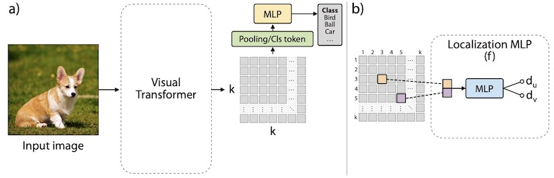
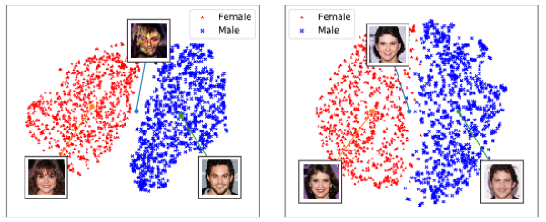
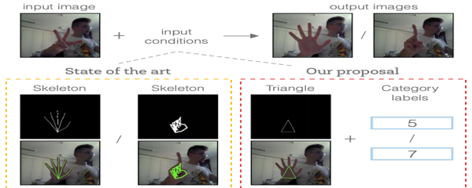
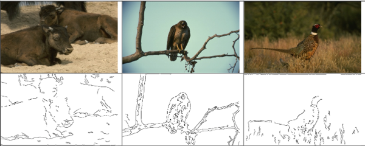
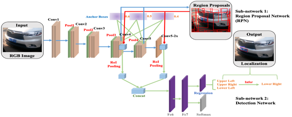
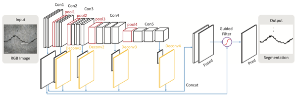
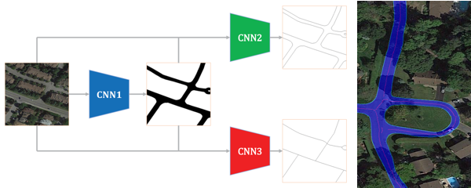

Publications
✦ Conferences
-

Efficient Training of Visual Transformers with Small-Size Datasets.
Yahui Liu*, Enver Sangineto, Wei Bi, Nicu Sebe, Bruno Lepri, Marco De Nadai
to appear in Conference on Neural Information Processing Systems (NeurIPS), 2021.
[arXiv] [code]
-

Smoothing the Disentangled Latent Style Space for Unsupervised Image-to-Image Translation.
Yahui Liu, Enver Sangineto, Yajing Chen, Linchao Bao, Haoxian Zhang, Nicu Sebe, Bruno Lepri, Wei Wang, Marco De Nadai
to appear in IEEE/CVF Conference on Computer Vision and Pattern Recognition(CVPR), 2021.
[paper] [supp] [video] [code]

-

Gesture-to-Gesture Translation in the Wild via Category-Independent Conditional Maps.
Yahui Liu, Marco De Nadai, Gloria Zen, Nicu Sebe, and Bruno Lepri.
ACM International Conference on Multimedia(ACM MM, Poster), 2019.
[arXiv][paper][code & dataset]
-
Towards Less Generic Responses in Neural Conversation Models: A Statistical Re-weighting Method.
Yahui Liu, Victoria Bi, Jun Gao, Xiaojiang Liu, Jian Yao, and Shuming Shi.
Conference on Empirical Methods in Natural Language Processing(EMNLP, Oral), 2018.
[paper][code & dataset]
-

Edge Chain Detection by Applying Helmholtz Principle on Gradient Magnitude Map.
Xiaohu Lu, Jian Yao, Li Li, Yahui Liu, and Wei Zhang.
IAPR International Conference on Pattern Recognition(ICPR, Oral), 2016.
[paper]
✦ Journals
-

Multi-Oriented and Scale-Invariant License Plate Detection Based on Convolutional Neural Networks.
Jing Han, Jian Yao, Jiao Zhao, Jingmin Tu, and Yahui Liu.
Sensors, Volume: 19, Issue: 5, Page(s): 1175, 2019. (Impact factor: 3.031).
[paper]
-

DeepCrack: A Deep Hierarchical Feature Learning Architecture for Crack Segmentation.
Yahui Liu, Jian Yao, Rengping Xie, and Li Li.
Neurocomputing, Volume: 338, Page(s): 139-153, 2019. (Impact factor: 4.072).
[paper][code & dataset]
-

RoadNet: Learning to Comprehensively Analyze Road Networks in Complex Urban Scenes From High-Resolution Remotely Sensed Images.
Yahui Liu, Jian Yao, Xiaohu Lu, Menghan Xia, Xingbo Wang, and Yuan Liu.
IEEE Transactions on Geoscience and Remote Sensing(TGRS), Volume: 57, Issue: 4, Page(s): 2043-2056, 2019. (Impact factor: 5.63).
[paper][code & dataset]
-
Automatic Multi-image Stitching for Concrete Bridge Inspection by Combining Point and Line Features.
Renping Xie, Jian Yao, Kang Liu, Xiaohu Lu, Yahui Liu, Menghan Xia, and Qifei Zeng.
Automation in Construction, Volume: 90, Page(s): 265-280, 2018. (Impact factor: 4.313). [paper]
-
Optimal Seamline Detection for Orthoimage Mosaicking by Combining Deep Convolutional Neural Network and Graph Cuts.
Li Li, Jian Yao, Yahui Liu, Wei Yuan, Shuzhu Shi, and Shenggu Yuan.
Remote Sensing, Volume: 9, Page(s): 701, 2017. (Impact factor: 4.118). [paper]
✦ Preprint
-
ISF-GAN: An Implicit Style Function for High-Resolution Image-to-Image Translation. 2021.
Yahui Liu, Yajing Chen, Linchao Bao, Nicu Sebe, Bruno Lepri, Marco De Nadai. [arXiv] -
Adversarial Shape Learning for Building Extraction in VHR Remote Sensing Images. 2021.
Lei Ding, Hao Tang, Yahui Liu, Yilei Shi, Lorenzo Bruzzone. [arXiv] -
Vanishing Point Guided Natural Image Stitching. 2020.
Kai Chen, Jian Yao, Jingmin Tu, Yahui Liu, Yinxuan Li, Li Li. [arXiv] -
GMM-UNIT: Unsupervised Multi-Domain and Multi-Modal Image-to-Image Translation via Attribute Gaussian Mixture Modeling. 2020.
Yahui Liu, Marco De Nadai, Jian Yao, Nicu Sebe, Bruno Lepri, Xavier Alameda-Pineda. [arXiv][code] -
Fast 3D Line Segment Detection From Unorganized Point Cloud. 2019.
Xiaohu Lu, Yahui Liu, Kai Li. [arXiv][code]